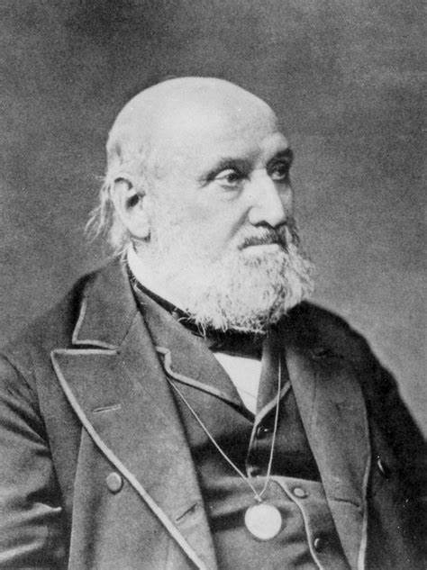
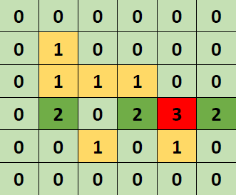
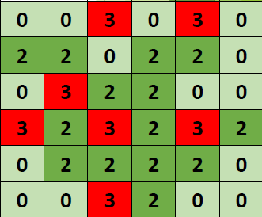
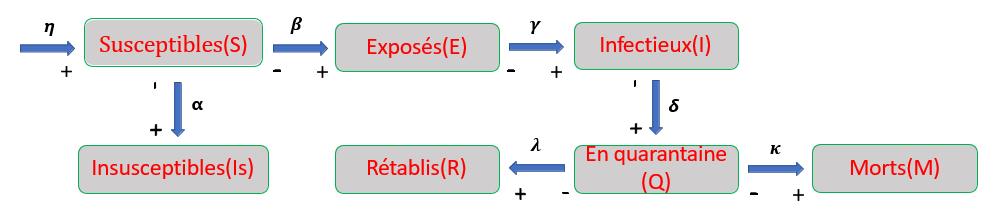

L'étude de la propagation d'une pandémie:
Approche probabiliste et déterministe
L’étude de la transmission des pandémies est le coeur de l’épidémiologie qui vise à améliorer les mesures de prévention dans le cadre de la santé public. Nous proposons alors des modèles basiques de la propagation des pandémies et leur implémentation sur le cas de covid-19.
L’épidémiologie est la science qui s’intéresse à l’évolution des épidémies et les facteurs responsables de leur transmission. Elle vise essentiellement à étudier leurs caractéristiques et par la suite de disposer d’indicateurs d’alerte pouvant proposer des mesures de prévention les plus adaptées. Pour en arriver, elle s’appuie souvent sur des modélisations consistant à reproduire le phénomène étudié sous forme d’équations non linéaires reliées par des paramètres expérimentaux. Toutefois, beaucoup de facteurs reliés à l’épidémie peuvent influencer l’efficacité de la modélisation tels que les caractéristiques et la dynamique de la maladie ainsi que la structure sociale des individus.
Dans un premier temps, pour simuler la propagation d’une maladie en tenant en compte la dépendance spatiale de la contagion, il est intéressant de procéder par un modèle probabiliste (la transmission de la maladie étant aléatoire justifie le recours aux probabilités) qui regroupe les individus dans une « Grille » et fait propager la pandémie suivant le critère « du plus proche individu à la personne infectée vers le plus loin individu ». La comparaison des résultats obtenus (par l’outil informatique) avec les données de Covid-19 au Maroc permet d’accéder aux valeurs des différentes probabilités mise en jeu dans le modèle.
Cependant l’épidémiologie n’a connu de vrai progrès qu’avec les travaux de A. G. McKendrick et W. O. Kermack. Ces derniers ont proposé le premier modèle compartimental « SIR » qui segmente la population, sujet d’une pandémie, en plusieurs catégories. Or de faite que ce modèle ne tient pas en compte la durée de latence de la maladie ainsi que le caractère dynamique de la population, il a fallu opter pour un modèle plus complexe qui annulent les hypothèses de modèle « SIR » ; à savoir le modèle « SEIR ». Pour pouvoir comparer les résultats théoriques avec les données expérimentaux, une amélioration de modèle « SEIR » classique est proposé dans le sujet via l’introduction de nouveaux compartiments pour approcher le plus possible l’évolution de Covid-19.
Le modèle SEIR fait intervenir des paramètres des flux entre les différents compartiments. Le taux de guérison et le taux de mortalité sont intimement liés à l’épidémie et à son contexte, la chose qui pose des problèmes pour visualiser l’évolution théorique de l’épidémie. Le sujet a proposé deux approches pour remédier à ce problème.
Dans un premier temps, nous avons pensé à estimer leurs valeurs sous l’hypothèse qu’ils sont indépendants de temps en calculant une valeur moyenne sur tout l’intervalle de temps de la propagation. Les résultats obtenus étaient proches de l’évolution réelle de Covid-19.
Dans un second temps, nous avons proposé une approche qui prend en compte la dépendance temporelle de l’épidémie. Sachant que le taux de guérison doit augmenter et le taux de mortalité doit diminuer au cours de temps (dû à l’imposition des procédés sanitaires tels que le confinement et le port des masques lors de l’augmentation des cas infectés), une évolution en exponentiel de ces paramètres semble être pertinente. Les résultats étaient sensiblement plus exacts en comparaison avec la méthode précédente.
Une confrontation des modèles étudiés montre que les modèles compartimentaux sont plus pratiques parce que les paramètres qu’ils font intervenir se calculent expérimentalement, alors que le modèle probabiliste sert plutôt à la théorisation la propagation de la pandémie. Le modèle « SEIR » est donc un outil très puissant pour prévoir l’évolution éventuelle d’une épidémie et sur lequel nous pouvons nous appuyer pour imposer les mesures protectives.
La modélisation des pandémies présente des intérêts majeurs pour la santé publique, surtout pour la mise en place des dispositifs de suivi et de prévention. Ainsi, Comment l’épidémie se propage au sein d’une population ? Et comment modéliser les interactions entre ses différentes catégories?
Introduction et histoire:
1- Aperçu historique:
L'épidémiologie apparut avec les travaux d'Hypocrate à la suite de ses études sur l'influence des facteurs envimontaux sur les maladies humaines. Mais, en tant que discipline scientifique, l'épidémiologie n'a commencé à s'appuyer sur des conceptions mathématiques et des théories de probabilité qu'avec William FARR considéré comme le fondateur de l'épidémiologie mathémathique.
2- Les objectifs de l'épidémiologie:
- Connaître les caractéristiques d’une maladie infectieuse.
- Etudier sa dynamique de diffusion temporelle et spatiale.
- Disposer d’un système d’alerte.
- Evaluer les actions de prévention.
L'épidémiologie est donc suivi et surveillance, puis étude et modélisation et enfin prévention et immunisation.
Etude par un modèle probabiliste:
1- Modèle spatiale (par Grille):
Pour mieux prendre en compte la dépendance spatiale de la contagion, il est possible de simuler la propagation d’une épidémie à l’aide d’une grille.
Chaque grille peut être dans l’un de ces états: 0 (Sain), 1 (Infecté), 2 (Rétabli), 3 (Décédé). L’état des cases d’une grille évolue au cours du temps selon ces règles:
- Une case décédé reste décédée, et une case rétablie reste rétablie.
- Une case infecté devient décédée avec une probabilité P1 ou rétablie avec une probabilité 1−P1.
- Une case saine devient infectée avec une probabilité P2 si elle a au moins une case voisine infectée et reste saine sinon.
Exemple d'évolution d'une population selon ce modèle:

|

|

|
| Etat initial |
Etat intermédiaire |
Etat final |
2- Résultas et interprétations:
En prenant une population de taille N² (donc représentable par la matrice de N lignes et N colonnes) complétement saine sauf un individu aléatoire qui est infecté, nous traçons en utilisant l'algorithme Python les courbes représentatives des nombres de personnes rétablies et de personnes décédées en fonction de temps (à priori en fonction de l'itération atteint dans l'algorithme Python). Ces nombres sont calculés suivant les règles définis ci-dessus ainsi que des nombres aléatoires générés par Python.

|

|
| L’évolution probabiliste des cas guéris |
L’évolution réelle des cas guéris |
En comparant ces deux courbes, nous remarquons que la croissance de la population rétablie théorique est conforme à son évolution réelle.
NB
La valeur de P2 doit ètre choisie pour que la courbe obtenue soit le plus identique à la courbe réelle.

|

|
| L’évolution probabiliste des cas décédés |
L’évolution réelle des cas décédés |
- En comparant ces deux courbes, nous remarquons que la croissance de la population décédée théorique présente un écart avec son évolution réelle.
NB
La valeur de P1 doit ètre choisie pour que la courbe obtenue soit le plus identique à la courbe réelle.
Etude par une version du modèle SEIR:
1- Premier modèle compartimentale (SIR):

|
Le premier modèle compartimentale a vu le jour en 1927 à Londres et Cambridge par McKendrick et Kermarck.
|

|
| Anderson Gray McKendrick (1876-1943) médecin militaire de l’armée britannique et épidémiologiste écossais. |
Ce modèle appelé le modèle SIR (S usceptible, I nfectious, R recovred) fût proposé pour expliquer l’évolution de l’épidémie de peste à Bombay en 1905-1906. |
William Ogilvy Kermack (1898-1970 ) biochimiste écossais, il a réalisé des études mathématiques sur la propagation des épidémies. |
Modèle SIR:

Dans le modèle SIR, la population est divisée en 3 compartiments (Susceptibles, Infectieux et Rétablis). Ces différents compartiments échangent des individus selon les paramètres de flux 𝛽 et 𝝀.
Pourquoi le modèle SIR n’est pas convenable à l’étude de la pandémie Sars-Cov-19?
Ce modèle ne peut pas ètre utilisé pour modéliser la pandémie Sars-Cov-19 car:
- La durée de latence de la maladie n’est pas prise en compte. (De nombreux cas sont infectés sans être contagieux)
- Il ne tient pas compte du compartiment des Insusceptibles, des décès et des personnes mise en quarantaine. (et donc incapables de transmettre la maladie)
- Il ne tient pas compte de caractère dynamique de la population. (nouveaux nés et migration)
2- Les hypothèses de modèle SEIR:

Le modèle SEIR (Susceptibles, Exposés, Infectieux et Rétablis) est un modèle compartimentale. Il segmente la population, sujet d’une épidémie, en plusieurs catégories.
Les compartiments interagissent entre eux par le biais d’échanges d’individus suivant un système d’équations différentielles prenant en compte les paramètres des flux entre les différents compartiments.

Le modèle SEIR est fondé sur ces hypothèses:
- Tous les individus réagissent en moyenne de la même manière à l’infection (peu importe les différences d’âge et de sexe).
- La transmission de l’épidémie est directe (d’une personne à une autre sans intervention d’autres moyens de transmission).
- Les personnes naissent saines.
- Les personnes guéries ne peuvent plus être réinfectées et sont définitivement immunisées.
NB
Ce modèle est encore insuffisant pour étudier Sars-Cov-19 car il n'y a pas de compartiments pour les insusceptibles, les décédés ainsi que pour les personnes mise en quarantaine
3- La version adaptée du modèle SEIR:
Il s'agit de complexifier le modèle précédent pour tenir compte des insusceptibles, des décédés et des personnes mise en quarantaine. Ainsi, on obtient le modèle ci-dessous:

Le système d'équations traduisant le modèle ci-dessus:
|
dS(t)/dt = −𝝱S(t)I(t) + 𝝶P(t) − 𝝰S(t)
|
dE(t)/dt = 𝝱S(t)I(t) − 𝛄E(t)
|
dI(t)/dt = 𝛄E(t) − 𝝳I(t)
|
|
dQ(t)/dt = 𝝳I(t) − 𝛌Q(t) − 𝛋Q(t)
|
dR(t)/dt = 𝛌Q(t)
|
dM(t)/dt = 𝛋Q(t)
|
|
dIs(t)/dt = 𝝰S(t)
|
P(t) = S(t) + Is(t)+ E(t) + I(t) + Q(t) + R(t)
|
Justification de la validité des équations:

La variation de nombre d’individus du compartiment « Infectieux » pendant une petite durée dI(t)/dt est égale au nombre d’individus arrivant du compartiment « Exposé » par unité de temps 𝛄E(t) 𝐭moins le nombre d’individus sortant vers le compartiment « En quarantaine » par unité de temps 𝝳I(t). Soit donc dI(t)/dt = 𝛄E(t) − 𝝳I(t)
4- La résolution numérique des équations:
Le système peut être résolu numériquement en utilisant la méthode d’Euler:
| L’équation différentielle |
L’écriture d’Euler |
|
dS(t)/dt = −𝝱S(t)I(t) + 𝝶P(t) − 𝝰S(t) ; S(𝑡=0)=S0
|
Sk+1 = Sk + dt(−𝝱SkIk + 𝝶Pk−𝝰Sk)
|
|
dE(t)/dt = 𝝱S(t)I(t) − 𝛄E(t) ; E(𝑡=0) = E0
|
Ek+1 = Ek + dt(𝝱SkIk − 𝛄Ek)
|
|
dI(t)/dt = 𝛄E(t) − 𝝳I(t) ; I(𝑡=0) = I0
|
Ik+1 = Ik + dt(𝛄Ek − 𝝳Ik)
|
|
dQ(t)/dt = 𝝳I(t) − 𝛌Q(t) − 𝛋Q(t) ; Q(𝑡=0) = Q0
|
Qk = Qk + dt(𝝳Ik − 𝛌Qk−𝛋Qk)
|
|
dR(t)/dt = 𝛌Q(t) ; R(𝑡=0) = R0
|
Rk+1 = Rk + dt(𝛌Qk)
|
|
dM(t)/dt = 𝛋Q(t) ; M(𝑡=0) = M0
|
Mk+1 = Mk + dt(𝛋Qk)
|
|
dIs(t)/dt = 𝝰S(t) ; Is(𝑡=0) = Is0
|
Isk+1 = Isk + dt(𝝰Sk)
|
|
P(t) = S(t) + Is(t) + E(t) + I(t) + Q(t) + R(t)
|
Pk = Sk + Isk + Ek + Ik + Qk + Rk
|
5- Représentation graphique des courbes

La population augmente au cours de temps. Cela est pertinent car le taux de natalité choisi (0,002) est supérieur au taux de mortalité (0,000549).
Les personnes susceptibles diminuent jusqu’à atteindre la valeur 0.
Les personnes insusceptibles augmentent jusqu’à atteindre une valeur limite.

Les trois courbes augmentent d’une valeur initiale (choisie arbitrairement) jusqu’à atteindre un pic puis elles diminuent.
Le pic des infectieux vient après le pic des exposés (à cause de la période de latence).
Le pic des personnes mises en quarantaine vient après le pic des infectieux (à cause de période de détection des infectieux par dépistage).
6- Détermination de quelques coefficients par deux approches
Les paramètres des flux:
Les valeurs de ces paramètres dépendent de l’épidémie et de son contexte. Leurs valeurs sont déterminées par un travail effectué en collaboration entre les équipes médicales, les épidémiologistes et virologistes et les mathématiciens. Les paramètres 𝝱 (taux d'infection), 𝛌 (taux de guérison) et 𝛋 (taux de mortalité) sont généralement des fonctions de temps. Mais nous pouvons les considérer constants dans des petits intervalles de temps. On se propose dans la suite d’estimer les valeurs de 𝛌 et 𝛋 primo sans tenir compte de temps et secundo en prenant en considération leur variation en fonction de temps.
Calcul de taux de mortalité et de taux de guérison sans tenir compte de temps:
En posant d𝐭 = 𝐭k+1 − 𝐭k
𝐝𝐌(𝐭)/𝐝𝐭 = 𝛋𝐐(𝐭) alors Mk+1 = 𝐌k + dt(𝛋𝐐k) d’où 
|
𝐝𝐑(𝐭)/𝐝𝐭 = 𝛌𝐐(𝐭) alors 𝐑k+1 = 𝐑k + dt(𝛌𝐐k) d’où 
|
Ces deux paramètres peuvent être estimés en s’appuyant sur des algorithmes Python ainsi que les statistiques de Covid_19 au Maroc depuis 01/07/2021 jusqu’à 19/08/2021.
Ainsi, nous trouvons:
𝜆 = 8,𝟑𝟕 × 𝟏𝟎-2 𝐣𝐨𝐮𝐫-1
𝜿 = 𝟓,𝟒𝟗 × 𝟏𝟎-4 𝐣𝐨𝐮𝐫-1
Résultats:

|

|
|
Les deux courbes sont très proches ce qui valide l’hypothèse que le taux de guérison est sensiblement indépendant de temps dans des petits intervalles de temps.
|
L’évolution théorique de l’épidémie présente un petit écart avec son évolution réelle.
|
Détermination des taux de mortalité et de guérison en tenant compte de temps:
En basant sur le fait que le taux de guérison doit augmenter et que le taux de mortalité doit diminuer au cours de temps (dû à l’imposition des procédés sanitaires tels que le confinement et le port des masques lors de l’augmentation des cas infectés) l’évolution des coefficients en exponentiel est pertinente.
𝝀(𝐭) = 𝛌0(𝟏−e(−𝛌1𝐭))
𝜿(𝐭) = 𝛋0(e(−𝛋1𝐭))
Avec 𝛌0, 𝛌1, 𝛋0 et 𝛋1 sont des constantes caractéristiques de la pandémie.
Résultats:

|

|
|
La correspondance des deux courbes est parfaite.
|
La correspondance des deux courbes est meilleur qu’auparavant.
|
7- Confrontation des deux approches

Il apparait donc que les deux approches sont très proches en terme des résultats. Cela est dû au fait que nous avons étudié l’épidémie dans un intervalle de temps non trop large. (nous pouvons postuler que la deuxième méthode est plus précise que la première)
Validation des modèles proposés:
- Le modèle déterministe SEIR décrit fidèlement le comportement de l’évolution de l’épidémie.
- De point de vue efficacité, SEIR est plus efficace que le modèle probabiliste « grille ».
- Le modèle probabiliste sert plutôt à la théorisation de la propagation de la pandémie.
- Les modèles étudiés nous renseignent sur l’intensité de l’évolution de l’épidémie (présence ou absence des changements brusque de l’évolution) ainsi que l’anticipation des pics.
- Le modèle SEIR nous informe sur les mesures qu’il faut adopter en fonction de l’état de l’épidémie (par exemple si on est au voisinage de pic).
Conclusion:
L’outil de modélisation dans l’épidémiologie est fondamental pour
prévoir l’évolution éventuelle d’une épidémie. Le modèle SEIR que nous venons d’étudier semble être parmi les modèles les plus confiants sur lequel nous pouvons nous appuyer pour imposer les mesures protectives dans le cadre de la santé public.